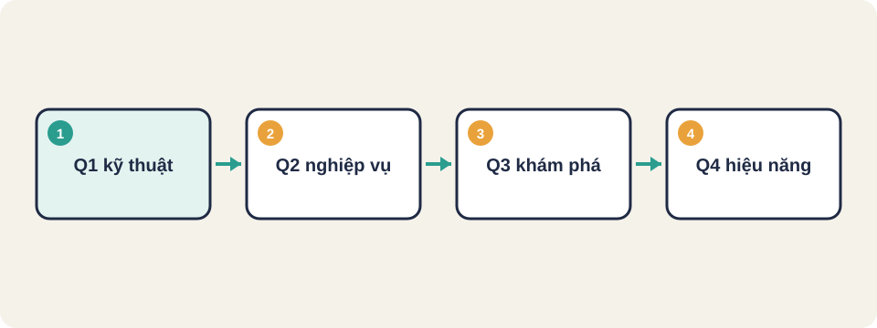
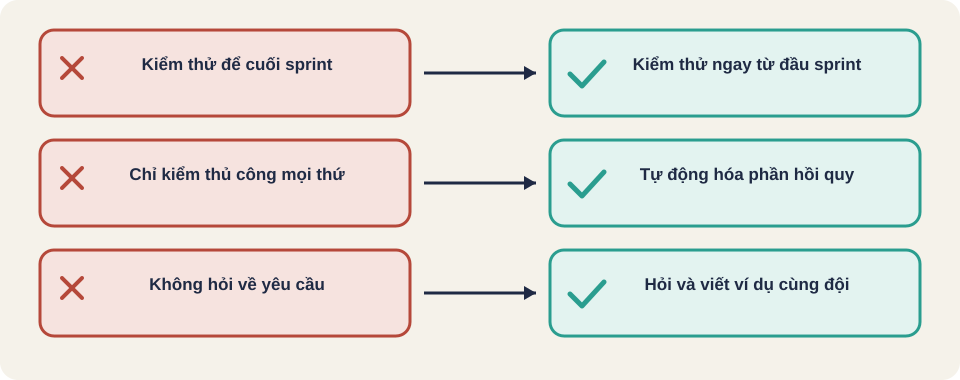

Hình vẽ gốc, dùng để minh họa thứ tự các bước chính của bài.
Bốn góc phần tư kiểm thử Agile: ai làm, hỗ trợ đội hay phản biện sản phẩm, và kỹ thuật hay nghiệp vụ.

Hình vẽ gốc, dùng để minh họa thứ tự các bước chính của bài.
Thuật ngữ trong slide này: Agile: Cách làm phần mềm theo các vòng ngắn, lấy phản hồi liên tục và thay đổi linh hoạt. · Sprint: Một vòng làm việc ngắn, thường từ một đến bốn tuần, kết thúc bằng phần việc chạy được.
Trong Agile, tester tham gia từ lúc chia nhỏ yêu cầu, làm việc cùng lập trình viên và chủ sản phẩm mỗi ngày. Kiểm thử diễn ra liên tục, không đợi đến giai đoạn cuối.
Thuật ngữ trong slide này: Agile: Cách làm phần mềm theo các vòng ngắn, lấy phản hồi liên tục và thay đổi linh hoạt.
| Nguyên tắc | Ý nghĩa với tester |
|---|---|
| 1. Giao phần mềm có giá trị sớm và liên tục | Kiểm thử phải nhanh để kịp bản giao |
| 3. Bàn giao phần mềm chạy được thường xuyên | Cần tự động hóa hồi quy để không chậm nhịp |
| 4. Nghiệp vụ và lập trình viên làm việc cùng nhau hằng ngày | Tester là cầu nối, hỏi được yêu cầu ngay |
| 6. Trao đổi trực tiếp là hiệu quả nhất | Bàn bạc sớm, không viết báo cáo dài để giải thích |
| 7. Phần mềm chạy được là thước đo tiến độ chính | Tiến độ kiểm thử đo bằng tính năng đã kiểm xong |
| 9. Kỹ thuật tốt và thiết kế tốt làm tăng khả năng thích ứng | Testability là một phần của chất lượng |
| 12. Nhóm định kỳ tự xem lại cách làm việc | Tester nêu vấn đề quy trình trong buổi retrospective |
Nguồn: Agile Manifesto Principles (agilemanifesto.org) [đã đọc, dịch sát nghĩa].
Thuật ngữ trong slide này: Agile: Cách làm phần mềm theo các vòng ngắn, lấy phản hồi liên tục và thay đổi linh hoạt.
| Hỗ trợ đội (hướng dẫn xây) | Phản biện sản phẩm (kiểm tra xem đã đúng chưa) | |
|---|---|---|
| Kỹ thuật (công nghệ) | Q1: kiểm thử đơn vị, kiểm thử thành phần | Q4: hiệu năng, tải, bảo mật |
| Nghiệp vụ | Q2: ví dụ theo yêu cầu, kiểm thử chức năng, nguyên mẫu | Q3: khám phá, kiểm thử chấp nhận của người dùng |
Nguồn: Crispin và Gregory, Agile Testing Quadrants [kiến thức chung, chưa đối chiếu PDF gốc].
Thuật ngữ trong slide này: Agile: Cách làm phần mềm theo các vòng ngắn, lấy phản hồi liên tục và thay đổi linh hoạt. · Góc phần tư kiểm thử (testing quadrants): Bốn nhóm kiểm thử xếp theo hai trục: hỗ trợ đội hay phản biện sản phẩm, và kỹ thuật hay nghiệp vụ.
Story: người dùng đăng nhập bằng email
Q1 (kỹ thuật, hỗ trợ): hàm kiểm định dạng email có test đơn vị
Q2 (nghiệp vụ, hỗ trợ): ví dụ "email đúng định dạng thì vào được trang chủ"
Q3 (nghiệp vụ, phản biện): người dùng thật thử đăng nhập trên điện thoại cũ
Q4 (kỹ thuật, phản biện): 1000 lượt đăng nhập cùng lúc vẫn dưới 2 giâyVí dụ (example) là một tình huống cụ thể mà cả đội đồng ý. Ví dụ "Nhập sai mật khẩu 5 lần thì tài khoản bị khóa 15 phút" trở thành tiêu chí chấp nhận. Viết ví dụ trước giúp lập trình viên và tester hiểu cùng một điều trước khi làm.
Kiến thức chung về phát triển theo ví dụ (example mapping); chưa đối chiếu nguồn gốc.
Thuật ngữ trong slide này: Sprint: Một vòng làm việc ngắn, thường từ một đến bốn tuần, kết thúc bằng phần việc chạy được.
Hoạt động "đo thời gian phản hồi khi 500 người dùng đăng nhập cùng lúc" thuộc góc phần tư nào? Vì sao? Và hoạt động "tester ngồi cạnh lập trình viên viết ví dụ cho story mới" thuộc góc nào?
Nguồn: FreeLearningResourcesForSoftwareTesters, mục "Testing in Agile". Một số liên kết có thể không mở được; kiểm lại trước khi đọc.
Thuật ngữ trong slide này: Agile: Cách làm phần mềm theo các vòng ngắn, lấy phản hồi liên tục và thay đổi linh hoạt. · Góc phần tư kiểm thử (testing quadrants): Bốn nhóm kiểm thử xếp theo hai trục: hỗ trợ đội hay phản biện sản phẩm, và kỹ thuật hay nghiệp vụ.

Thuật ngữ trong slide này: Sprint: Một vòng làm việc ngắn, thường từ một đến bốn tuần, kết thúc bằng phần việc chạy được.
Agile
Sprint
Góc phần tư kiểm thử (testing quadrants)
Thuật ngữ trong slide này: Sprint: Một vòng làm việc ngắn, thường từ một đến bốn tuần, kết thúc bằng phần việc chạy được.